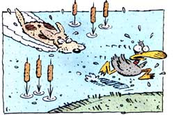

LAST LAUGH
WELL SIR, ANY BIRD HUNTER worth gunpowder knows that a good retriever's worth more than a good shotgun: It don't do good to shoot something if you can't bring it home.
This truth came to mind the other day when the Plumtree Crossing General Assembly gathered at that hotbed of tranquillity, the front porch of Pennywhistle's General Store. The fellas were just swinging their rockers and enjoying the amber days of fall, when Doc Thromberg asked, "Where's Billy Parsons? Didn't Ott and Newt take him duck hunting yesterday?"
The respective Misters Bartlett and Blanchard grinned so suspiciously that the fellas swiped the pipes from their mouths and made 'ern talk.
"Yep, it's true," Ott said. "We decided to introduce young Billy to the fine art of wing shooting. So before bust of day-"
"-when it was so cold (Newt broke in) the mercury was hanging three clapboards below the bulb-"
"-we woke Billy up," Ott continued,
" - and headed out to our duck blind on Big Swampy River. It was still a bit dark-"
"-darker'n a stack of black cats!" (volunteered Newt)
"So we whiled away the time telling young Billy about my ol'dog, Dan. Dan weren't no purebred, just a black-and-tan pot licker, but, by thunder) that dog could bird. I remember once I found a whole flock of doves working a field of corn stubble and unloaded my shotgun at 'em. I'd aimed a mite low, but that didn't stop ol' Dan. He went out and brought back every one of those birds' feet for me.
"Another time, I took kind of a potshot - "
"-it was wilder'n a billy goat in a pepper patch - "
(courtesy of you-know-who)
"-at a bunch of geese flying overhead. Dan raced home, got a gunnysack, lit on back, and caught every goose before it hit the ground! - "
"Yessir, I lent Dan once to a pond hunter. I told him to just send the dog ahead and listen. If he barked two times, there were two ducks round the next bend. Three barks meant three ducks, and so on. But the fellow came back that same afternoon - "
"-tail up and stinger out - " (©1989 by Blanchard Metaphors, Inc.)
-and said the dog never barked once. Just kept coming back and hitting him on the leg with a piece of wood. 'Shucks,'l told him.
'He's just trying to tell you there aren't enough ducks there to shake a stick at.'
"Dan did make ducks nervous. I was hunting canvasbacks once that kept diving underwater every time I tried to shoot. Ol' Dan dove right after them. They were so scared they flew up, jumped into my sack, and started plucking their own feathers. After that, instead of putting bird decoys out in front of my duck blinds, I carved decoys of Dan and put them in front of the other hunters' blinds. Then I'd shoot my limit - "
"-faster'n double-geared lightning." (Q.T. Quips, Ltd.)
"Ol' Dan kept a sharp eye on me, too. If he saw I was drinking too much coffee, he'd bump my right arm when I was swinging at some ducks-to slow the gun down enough so I'd hit 'em. If I'd been putting away some more-potent gut warmer, though, he'd nuzzle the left side-to speed me up. I tell you, that dog was-"
"-smarter'n a tree full of owls." (M.T. Wisecracks Co.)
"Finally, some rich hunter from the city tried to show off his dog to me. He had some fancypants Labrador trained to walk on water. It'd go right out there and back, just pitty-pattying on its paws. The fella thought I'd be impressed, but I stuck by Dan. I just shook my head sadly and said, 'Tch, tch. I never saw a retriever that couldn't swim.' "
"But what happened to Billy?" the fellas asked restlessly.
"To Dan?" Ott said. "Well, he finally swum himself to death chasing a duck that fell in a water-ski boat. I dug a hole for him, then cocked my bird gun to fire a last salute. Durned if that sound didn't almost bring Dan back to life-he half-opened one eye and thumped his tail twice on the ground."
"But what happened to Billy?!- the fellas pleaded.
"Oh, Billy. Uh, well, he liked our stories so much that he volunteered to fetch our birds himself. Newt and I gave him some pointers, and darned if he didn't swim out in the river and bring back nearly every duck we shot. It looked like he had some real potential as a retriever."
But then Ott stared down at the porch floor and wouldn't say a word. The fellas finally pressured Newt into talking.
"Well boys," said Newt, "there weren't no choice in the matter. Billy got to running rabbits - so we had to shoot him."
The fellers nodded their heads, speechless. Then they all bowed their heads, took off their hats, and sat down silently in their chairs - so silently, in fact, that they could hear someone chuckling softly under the porch.
Some young fella - name of Billy Parsons.
This column is dedicated to a great bird-dog lover, Dr. Charles F Stone, Jr., by his devoted son, Pat.
|
 |
|
|